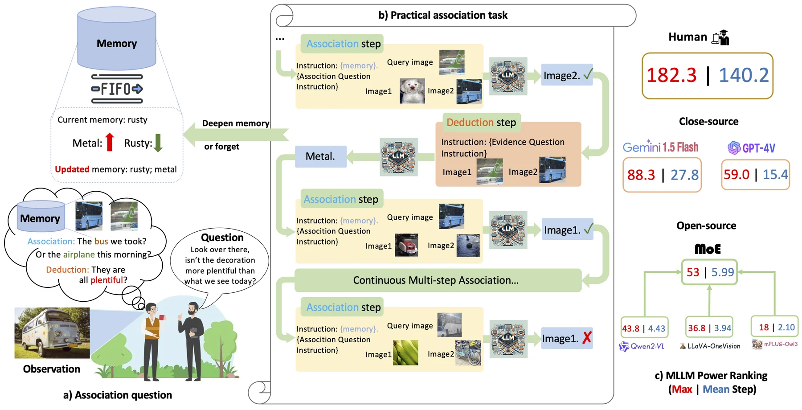
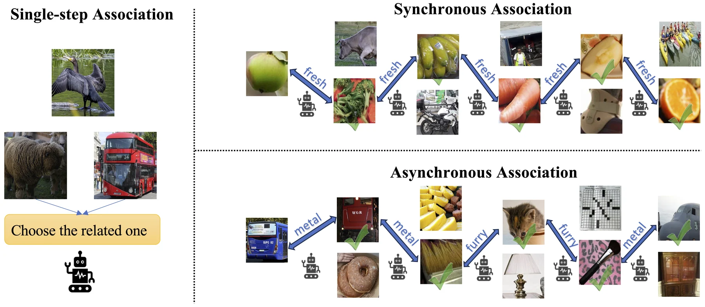
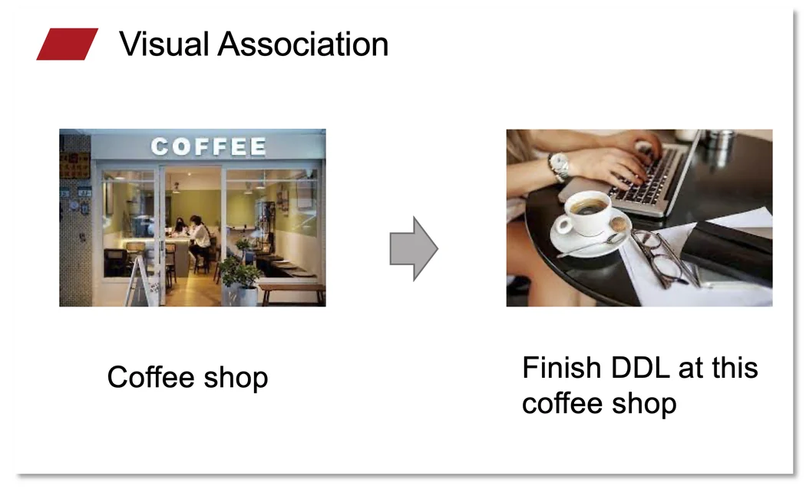
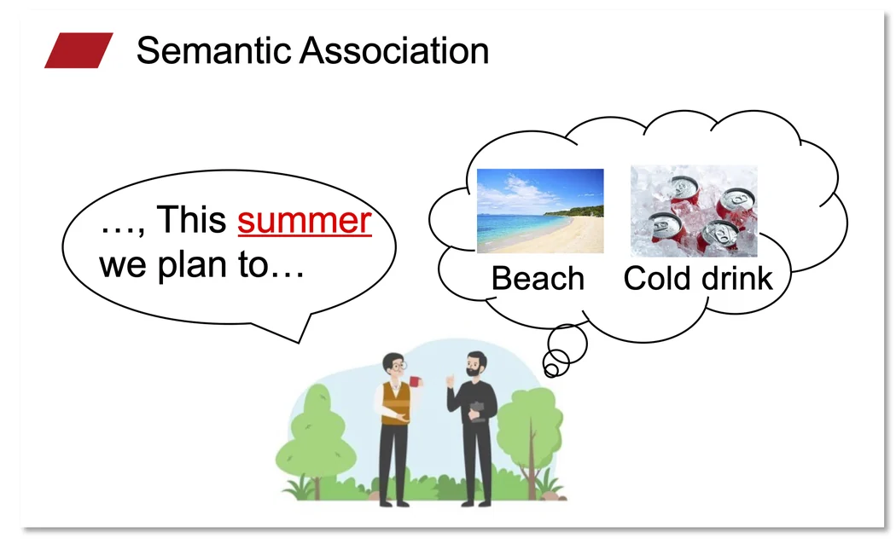
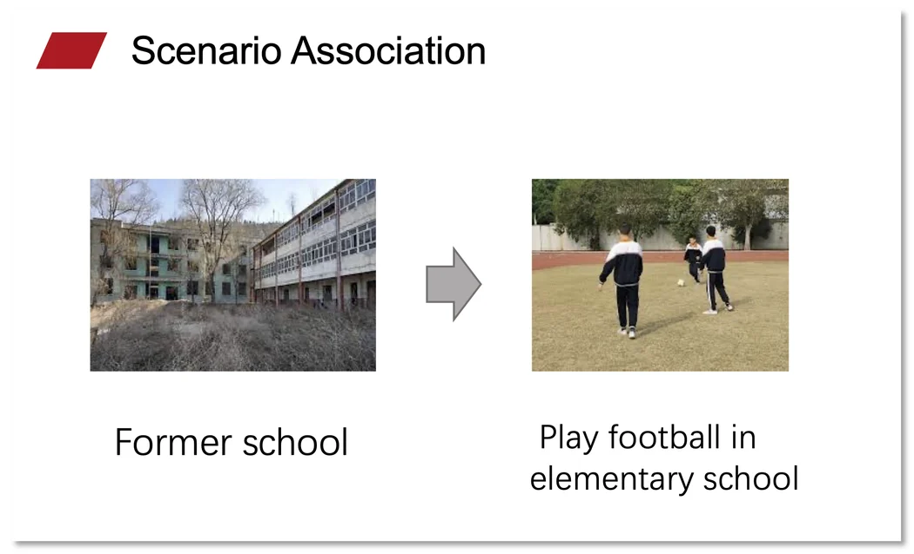
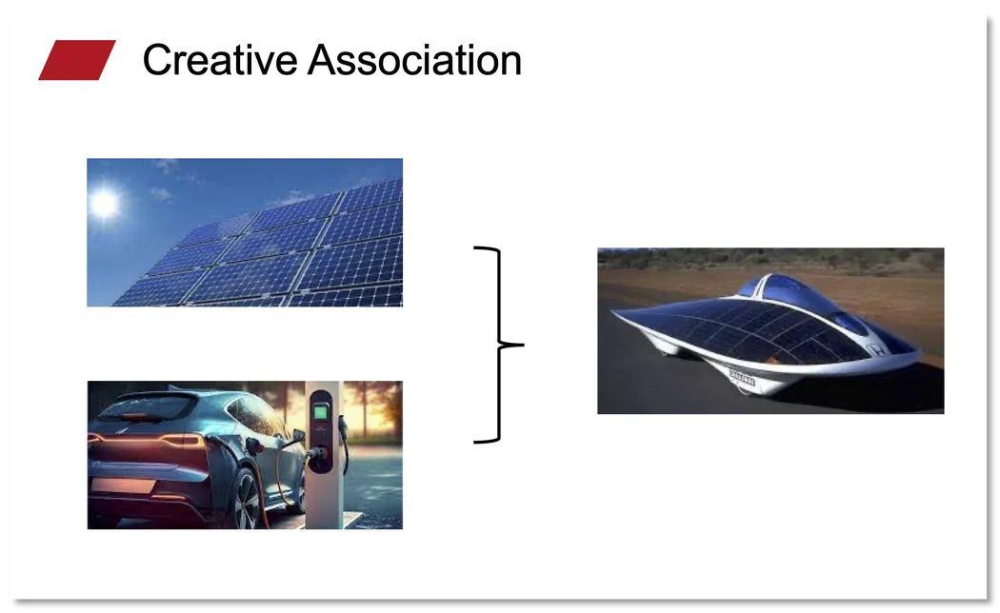
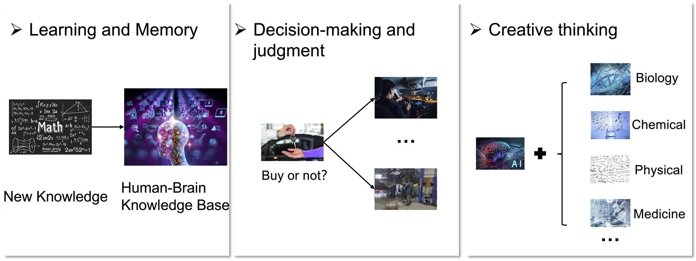

The Labyrinth of Links: Navigating the Associative Maze of Multi-modal LLMs
Shanghai Jiao Tong University · Shanghai Innovation Institute · ICLR 2025
Can a multimodal model use earlier observations to recognize a shared concept and keep following it as new observations arrive? The benchmark tests this with visual attributes, affordances, and actions.

Association benchmark
The benchmark builds paired observations from OCL attributes and affordances and Pangea actions, then filters unclear examples through image checks, model verification, and human review.
- Single-step selects the related observation using a fixed, correct memory. The metric is success ratio.
- Synchronous keeps one shared concept throughout a chain and updates memory after each decision.
- Asynchronous switches between two concepts and requires recalling an earlier step. Both chain tasks measure mean and maximum uninterrupted steps.

What happens as the chain grows?
The study compares structured, natural-language, and chain memory with a no-memory baseline. Natural-language memory generally helped. Mixtures of experts improved asynchronous chains over the tested individual open models.
Takeaway In synchronous attribute association, human experts averaged 350 consecutive steps. The tested open models averaged fewer than 20.
Demo
Association examples and applications









Citation
BibTeX
@inproceedings{li2025labyrinth,
title = {The Labyrinth of Links: Navigating the Associative Maze of Multi-modal {LLMs}},
author = {Li, Hong and Li, Nanxi and Chen, Yuanjie and Zhu, Jianbin and Guo, Qinlu and Lu, Cewu and Li, Yong-Lu},
booktitle = {International Conference on Learning Representations},
year = {2025},
url = {https://openreview.net/forum?id=vJ0axKTh7t}
}